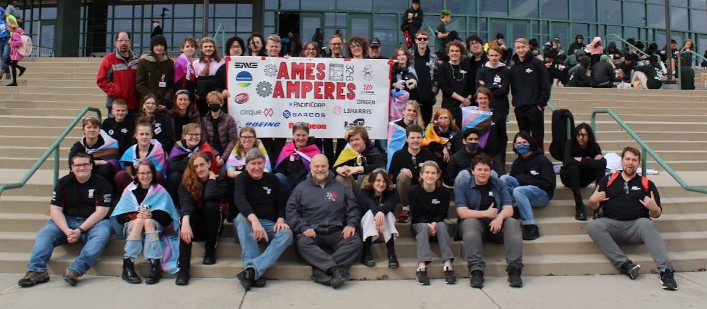

Photo by Issac Madsen
I am a junior at the Academy for Math Engineering and Science, and I am very interested in software development and computer science education. I have participated in the Educators Rising competition for two years, and I am currently the assistant captain of my school's FRC team, the AMES Amperes, as well as one of its Dean's List Semifinalists. In addition to my work with the team, I have worked on a variety of other projects on my own, as well as in groups. In school, I take and excel in advanced classes, including concurrent enrollment classes from the University of Utah.
Hale Barber is one of the most enthusiastic and thoughtful students I have taught at AMES... He not only easily keeps up with the rigorous course material, he also takes what we learn in class beyond what is expected. He will often build a computer program or a Desmos file to generalize the processes we do with paper and pencil, not because it makes things easier, but because he is interested in programming and enjoys the challenge... Hale will be an asset to any program, and I recommend him with no reservations.
Camilla Strong - Calculus Teacher - cstrong@ames-slc.org
Hale is widely recognized as an FRC software guru and has received multiple calls for help from other FRC teams... He explains things clearly and completely. He customizes his lessons to fit the ability levels of the students he's working with, so that they're sufficiently challenged, but not overly so.
Douglas Hendricks - Robotics Mentor, Physics Teacher - dhendricks@ames-slc.org
I worked an internship at a company called Code Ninjas. They run a program in which kids learn to code through a variety of programming tasks. My role was to guide kids through these activities when they ran into trouble and explain the concepts to them. It has been invaluable to me, as it allowed me to be on the front lines teaching computer science. Education, especially in software engineering has always been interesting to me, and the experience has made me reevaluate how I teach computer science in a number of ways. For example, I observed a tendency to skip the reading and simply copy and paste code until it works. I have tried to combat this by focusing on and directly teaching theory, as well as asking questions when helping a student that require an adequate understanding of the topic to answer.
It also taught me about how to navigate a corporate environment. For example, I got practice in communicating with managers, ensuring company policy is followed, and completing all tasks assigned to me. Finally, I was given the opportunity to run some summer camps, which not only let me develop my teaching skills in a more traditional environment, but also taught me additional problem solving skills. For example, when I was running a 3D design and print camp, the 3D printer broke down, and I was able to repair it while still instructing at the appropriate times and answering the questions of the students.
RoboticsThe FIRST robotics competition (FRC), is a competition where high schoolers compete to create robots in teams. Each year, the season starts with "kickoff", where we learn what game we will be playing that year. We then have six weeks to design, build, wire, and program a robot to accomplish this task. Once the six weeks are done, all the teams in the state go to a regional competition, where we play matches against other teams, in alliances of 3, randomly determined for each match. It has a wonderful community, which incorporates cooperation as much as competition.
Photo by Issac Madsen
2022-2023
I joined my school's robotics team, the Amperes, team 3243, in 2022. My first experience was preseason, where we created robots to complete a simple challenge in a competition hosted by the school. My small group was able to achieve 2nd at this competition of around 20 teams, which we were very happy with. Next we moved on to the real season. I was part of the programming subteam, and I helped program an extendable and pivotable arm, with a rolling and pitching wrist on the end. I used a variety of methods within the library for FRC, WPILib. We program in Java, and I gained much of my Java experience through working on the robot. We participated in two regional competitions that year, and won some small awards in each.
Photo by Issac Madsen
2023-2024

Photo by Issac Madsen
After the 2023 season, I was given the position of software lead, and I immediately set to work. I worked with our software team to organize and work on a number of interseason projects to try and improve our team's strength and culture. We worked on lessons for incoming programmers to try and reduce the barrier to entry of the programming team. We worked on documenting our knowledge and past experience for those who came next. We also developed what code we could before the season started. In the 2023 preseason I worked alongside the rest of the software team to include and support our new members of the programming team, which included teaching lessons about programming, checking in and providing support when needed for programming the preseason robots, and even having the programming team over for a game night on occasion. My team awarded me as a Dean's List Semifinalist for the 2024 competition. As the FIRST organization says, "The students who earn FIRST Dean's List status as a Semi-finalist, Finalist or Winner, are great examples of current student leaders who have led their teams and communities to increased awareness for FIRST and its mission while achieving personal technical expertise and accomplishment."
For two years, I have participated in the Educators Rising competition. This consisted of creating an educational resource and presenting it to judges. In my first year, I created a paper model of an object oriented data structure. Paper boxes represented objects, with a blueprint representing a class. The students could cut out and assemble boxes, (represented by the constructor on the blueprint), and also run the code which corresponded to their actions with the boxes.
The next year, I created a lesson plan, and taught it in a Programming 2 class. My lesson consisted of an activity where students gave instructions to other students, to complete a task. To better mimic programming, the students were not allowed to look at the person they were giving instructions to, and also were only allowed to use certain words. After a discussion about the activity, the students were instructed about how to use a debugger, and were given a debugging task.
Graphing Calculator
In this project, I made a graphing calculator for a pair project in my AP CS principles class. I wrote the parser routine, evaluation routine, and graphing framework. My partner wrote the app navigation. I used a recursive object structure in JavaScript to represent an expression typed in by the user, whether on the graphing or evaluation screen. Each object held two other objects, as well as the operation to combine them with. The objects held could be other expressions, or a terminating x or constant. The parser would translate a string mathematical expression and use order of operations to generate an expression object. An expression is evaluated by recursively traversing the expression object and combining its components using its operation.
Wyrm Heart
For my AP CS principles final project, I created an adventure game taking place in a procedurally generated maze. The project was written in Python, and I used the object oriented paradigm to organize the code. The player was a singleton, the enemies were classes extending a base enemy class, and so on for most elements in the game. It taught me a lot about code organization and problems with python. If I were to come back to this project, there are quite a few things I would fix, such as a lack of gameplay diversity, strange pacing, and the amount of grind. Overall, I'm still quite happy with the project.
Relative Faith
Relative Faith was a video game I worked on with a group as a part of a game development class. In it, you platform between planets, with one catch: the speed of light is very low. I wrote the relativistic physics for this project, which involved making a modular script that would take in data from a game object about its true velocity and forces, and puppeteer it to the correct position. Not only was this my first Godot project, it was also my first time working with shader languages. Godot has a shader language similar to GLSL, and I used this to attempt to implement length contraction, light travel distortion, and the doppler effect, but unfortunately, I was never able to get it to work properly before reaching the deadline for the project and moving on.
Desmos 3D Rendering
In this project, I wrote a 3D graphing engine in the 2D graphing calculator Desmos. It taught me a lot about graphics and rendering. The program in Desmos takes a list of vertices, as well as a list of triangles in terms of the indices of the relevant vertices, and generates a 2D triangle and color for each for Desmos to plot. I also performed backface culling, and then sorted the triangles to preserve the correct occlusion of one by another. I enjoy working around strange restrictions, and Desmos provides plenty of these. For example, there are no nested arrays, 2D arrays, or 3D points in Desmos. This meant I had to use three lists for the vertices—one for the x, the y, and the z. In addition, I wrote a small python script to convert a .obj file into the relevant lists in a format I could import into Desmos.
This Website
I wrote this website in raw HTML from the ground up. I had taken a "Creative Coding" class in middle school, which covered HTML and CSS, but making this website has taught me much more about them. I decided to write it from scratch rather than use a framework because I thought it would teach me more about frontend development, which I have done very little of. I invite you to poke around this website with your browser's inspector and take a look! I can't promise good comments though, it's just me working on this project.